Greek-Collation¶


Application¶
This application is left in an unfinished state. It is a collection of experiments, expressed in Perl scripts.
Part of these scripts have been used to transform the Jude files, as delivered by Tommy Wasserman, into plain Unicode text, which has been deposited at DANS.
History¶
Contributors¶
Dirk Roorda (References) (author of this wiki), Jan Krans (References), Juan Garcés (References) and Matthew Munson (References).
Fabric of Texts¶
A good example of a fabric of texts is the Greek New Testament, because the set of NT manuscripts exceeds 5000, their variability is substantial, and there is a century long tradition of edition making.
The task we have set for ourselves is to find models and tools to facilitate new research on text fabrics like the New Testament. How can researchers dissect and recombine the data in new ways, supporting new hypothesis, and how can we exploit this unique selling point of the digital paradigm?
However, the complexity of this all is too daunting to start experimenting. That is why we have chosen a small but interesting subset: the letter of Jude. This is a one page ‘book’ near the end of the NT, of which there are variations that point to interesting differences of interpretation. Linguistic analysis at the manuscript level, and comparing the analyses for the different manuscripts could yield significant interpretation results.
While the NT fabric of texts includes over 5000 manuscripts, there are only 560 or so manuscripts in which (portions) of the letter of Jude occur. That makes it much more manageble and still not trivial!
There is another very good reason to single out the letter of Jude: recently all its manuscript data has been transcribed and analysed by Tommy Wasserman (References), and he has deposited them as a dataset (References) in the DANS archive, available on request.
Context and motivation¶
This work attempts to extend a line of research that lead to my Queries and Features as Annotations application (References).
My interest, as researcher at DANS is to find ways in which digital archives can facilitate researchers when they demand intensive use of data resources. Stable linking to fragments is a key requirement. We want to combine that with fragment linking across variants.
This move forces us to leave the more or less naïve concepts based on hypertext linking and embrace more involved concepts such as those of FRBR (References)
The Case¶
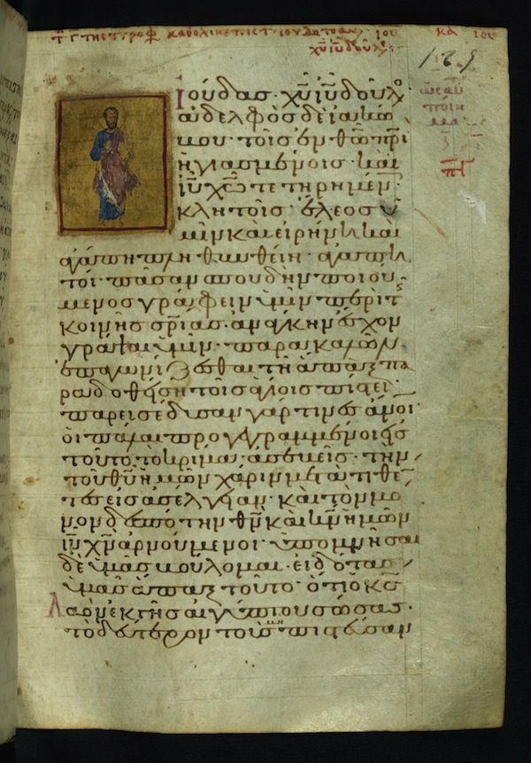{kind=link}
The data foundation for this case is the work of Tommy Wasserman (References), author of a monograph on the manuscripts of Jude (References). He kindly gave us the transcriptions of 560+ manuscripts that contain passages of Jude for experimentation. Jan Krans and Dirk have started to dissect them, and we have them now character by character in a database (1.7 million records). To be continued.
Here is a nice example of such a manuscript, from the Walters Art Museum in Baltimore. The page shown here is W.533 261. folio 129r.
The Idea¶
In a nutshell, the idea is to separate the information contained in a manuscript into layers. The main text is a layer, and everything else is store into other layers. The connection between the layers are the anchors: character positions in the main text.
After this step we have hope to be able to collate the main text layer of all manuscripts. We even could collate other layers and see what happens.
The results of the collation will be used to relate character positions across manuscripts.
The Work¶
Source¶
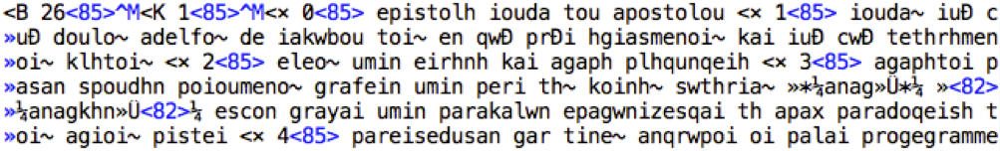{kind=link}
The source is a set of transcriptions from microfilm of all the Greek manuscripts that contain passages of the epistle of Jude. Tommy offered his own version of these transcriptions -as is- to Jan Krans (References) and me (References) for exploratory purposes. They came in the form of text files in a non-standard encoding. Due to the software that was originally used (Collate 2.0), the greek text was represented in Symbol Greek, not UNICODE. That is absolutely fine when using Collate 2.0, but not very interoperable with UNICODE-aware applications. So we converted all greek text to real UNICODE greek. Here is a screenshot.
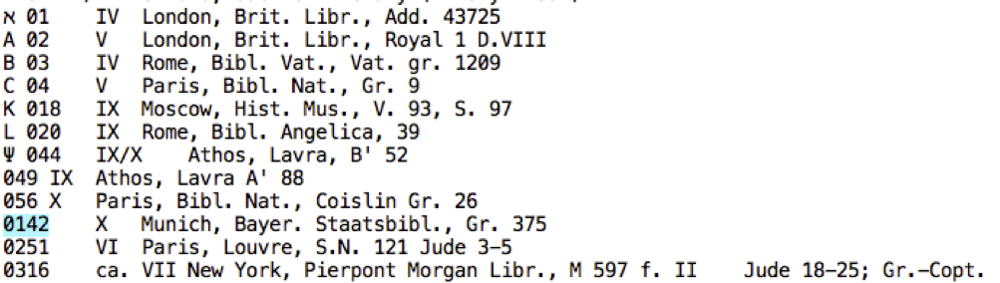{kind=link}
In his book, Tommy has provided a list of the provenance of the original manuscripts, containing the year of creation and the places where they lie stored now.
Step 1: to UNICODE¶
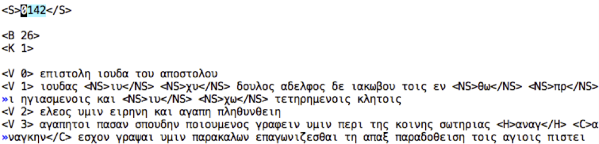{kind=link}
The first step by Jan and I was to transform the original files into one file in UNICODE, with real unicode greek characters. We treated comments carefully, in order not to greekify texts that were after all latin. We detected all markup, checked it, and rewrote it as XML tags.
The source code of this conversion plus a complete log and a summary of the activities of this script has been added to the dataset (References): see the folder conversion and in there the files transform.pl and transform.log and summary.log.
Step 2: Layered markup, anchored by position¶
The next step was to split the material in layers. Every passage has a source layer, containing the primary text. Every character in the source layer has a fixed character position, a number. Everything else goes into other layers: markup layers, comment layers and nomina sacra layers. Material in other layers have character positions that correspond to the character positions in the source layer. At the same time, we merged the provenance information into the transcription data. A visual representation of the result is contained in the file graphpaper.txt, in the dataset (References). A screenshot appears at the top of this page.
Step 3: SQL import file of layered markup¶
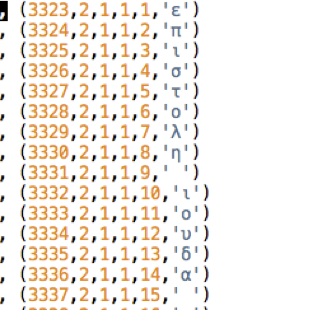 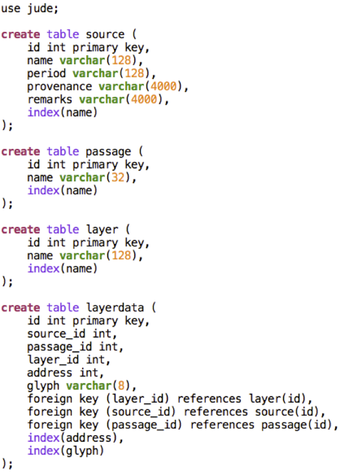{kind=link}
{kind=link}
The final step has been to transform the numerical representation into a real database model. The text has been divided into passages (verses). The contribution of every source (manuscript) to a passage consists of a set of layers. Each layer contains characters at certain positions. The complete datamodel is shown in the screenshot next.So every single character in every single manuscript occupies a layerdata record. This layerdata record contains also the address (position) of the character (relative to the character positions in the source layer). Moreover, the layerdata record is linked to the corresponding source record, passage record, and layer record. Below is a screenshot of a small fragment of the layers.sql file, which is included in the dataset (References)
Intermezzo¶
So far for the contents of this dataset. The question is: what can you do with it?
Exercise¶
A first exercise is to get all nomina sacra of the main text. The following sql query will do the trick:
use jude;
select
layerdata.address,
layerdata.glyph,
source.name,
passage.name
from
layerdata inner join source
on layerdata.source_id = source.id
inner join passage
on layerdata.passage_id = passage.id
inner join layeron layerdata.layer_id = layer.id
where
layer.name = 'SRC-NS'
order by
passage.id,
source.name,
layerdata.address
and the initial part of the result is:
| address | glyph | name | name |
|---|---|---|---|
| 8 | ι | 142 | 1 |
| 9 | υ | 142 | 1 |
| 11 | χ | 142 | 1 |
| 12 | υ | 142 | 1 |
| 48 | θ | 142 | 1 |
| 49 | ω | 142 | 1 |
Step 4: Collation¶
The following task is: use collation software (such as CollateX (References)) to collate the source layer. Based on the collation results we can then build a table that links character positions in one source to character positions in another source. This will yield an enormous web of interrelated character positions. If this web is stored as a new database table as well, then we have a starting point to build convenient visualizations of all the material that is relevant to a researcher of the passages of Jude.
But the first thing is: does an automatic collation yield good enough results to serve as foundation for the position linking? And can we do the position linking effectively? If we have to link every pair of manuscripts explicitly, we incur an enormous overhead, since there are more than 125,000 pairs of transcriptions.
So maybe the collation will give us a master source against which we can link all real sources in a bidirectional way. Transpositions are a complicating factor here. An idea could be to remove the concept of order from the master source, so that it becomes a bag-of-words. Since the master source only has to serve as a set of linking points, it is no longer a requirement that we must be able to reconstruct the variants from the master. Wy should we, if we have and keep the variants intact?
Collation with CollateX¶
At the moment I am at the stage that I have seen a reasonably good collation by CollateX (References), even without using the detected transpositions.
Here is a sample of the collation (in a pretty-printed form):
0142 |ιουδας| |ιυ |χυ | | | | |δουλος|αδελφος|δε|ιακωβου|τοις | |εν |θω |πρι | | | | |ηγιασμενοις |και |ιυ |χω | | |τετηρημενοις|κλητοις |
0251 |█ | | | | | | | | | | | | | | | | | | | | | | | | | | | | |
0316 |█ | | | | | | | | | | | | | | | | | | | | | | | | | | | | |
049 |ιουδας|χυ |ιυ | | | | | |δουλος|αδελφος|δε|ιακωβου|τοις | |εν |θω |πρι | | | | |ηγιασμενοις |και |ιυ |χω | | |τετηρημενοις| |
056 |ιουδας| |ιυ |χυ | | | | |δουλος|αδελφος|δε|ιακωβου|τοις | |εν |θω |πρι | | | | |ηγιασμενοις |και |ιυ |χω | | |τετηρημενοις|κλητοις |
1 |ιουδας| | | | | |ιησου|χριστου|δουλος|αδελφος|δε|ιακωβου|τοις | |εν |θεω | | | | |πατρι |ηγιασμενοις |και | | |ιησου|χριστω |τετηρημενοις|κλητοις |
1003 |ιουδας| | | | |χριστου|ιησου| |δουλος|αδελφος|δε|ιακωβου|τοις | |εν |θεω | | | | |πατρι |ηγιασμενοις |και | | |ιησου|χριστω |τετηρημενοις|κλητοις |
101 |ιουδας| | | | |χριστου|ιησου| |δουλος|αδελφος|δε|ιακωβου|τοις | |εν |θεω | | | | |πατρι |ηγιασμενοις |και | | |ιησου|χριστω |τετηρημενοις|κλητοις |
102 |ιουδας| | | | | |ιησου|χριστου|δουλος|αδελφος|δε|ιακωβου|τοις | |εν |θεω | | | | |πατρι |ηγιασμενοις |και | | |ιησου|χριστω |τετηρημενοις|κλητοις |
1022 |ιουδας| | | | |χριστου|ιησου| |δουλος|αδελφος|δε|ιακωβου|τοις | |εν |θεω | | | | |πατρι |ηγιασμενοις |και | | |ιησου|χριστω |τετηρημενοις|κλητοις |
103 |ιουδας| | | | | |ιησου|χριστου|δουλος|αδελφος|δε|ιακωβου|τοις | |εν |θεω | | | | |πατρι |ηγιασμενοις |και | | |ιησου|χριστω |τετηρημενοις|κλητοις |
104 |ιουδας| | | | |χριστου|ιησου| |δουλος|αδελφος|δε|ιακωβου|τοις | |εν |θεω | | | |και |πατρι |ηγιασμενοις |και | | |ιησου|χριστου|τετηρημενοις|κλητοις |
1040 |ιουδας| | | | | |ιησου|χριστου|δουλος|αδελφος|δε|ιακωβου|τοις | |εν |θεω | | | | |πατρι |ηγιασμενοις |και | | |ιησου|χριστω |τετηρημενοις|κλητοις |
105 |ιουδας| | | | | |ιησου|χριστου|δουλος|αδελφος|δε|ιακωβου|τοις | |εν |θεω | | | | |πατρι |ηγιασμενοις |και | | |ιησου|χριστω |τετηρημενοις|κλητοις |
1058 |ιουδας| | | | | |ιησου|χριστου|δουλος|αδελφος|δε|ιακωβου|τοις | |εν |θεω | | | | |πατρι |ηγιασμενοις |και | | |ιησου|χριστω |τετηρημενοις|κλητοις |
1066 |ιουδας| | | | | |ιησου|χριστου|δουλος|αδελφος|δε|ιακωβου|τοις | |εν |θεω | | | | |πατρι |ηγιασμενοις |και | | |ιησου|χριστω |τετηρημενοις|κλητοις |
1067 | | | | |ιουδας | | |χριστου|δουλος|αδελφος|δε|ιακωβου|τοις | |εν |θεω | | | | |πατρι |ηγαπημενοις |και | | |ιησου|χριστω |τετηρημενοις|κλητοις |
Collation with a new algorithm¶
Now we will research whether a bag-of-words master source is a workable idea. I just found a new way to link corresponding positions across variants. Still a lot of checking and cross-checking has to be done. Pending the verdict whether the new method yields good results, it is certainly an interesting experience to look at this data in completely new ways.
Here is an illustration first, it is the passage Jude verse 1, just one line of text, but in 560 variants.
Here is the source in just a few variants:
0142 = ιουδας ιυ χυ δουλος αδελφος δε ιακωβου τοις εν θω πρι ηγιασμενοις και ιυ χω τετηρημενοις κλητοις
049 = ιουδας χυ ιυ δουλος αδελφος δε ιακωβου τοις εν θω πρι ηγιασμενοις και ιυ χω τετηρημενοις
056 = ιουδας ιυ χυ δουλος αδελφος δε ιακωβου τοις εν θω πρι ηγιασμενοις και ιυ χω τετηρημενοις κλητοις
1 = ιουδας ιησου χριστου δουλος αδελφος δε ιακωβου τοις εν θεω πατρι ηγιασμενοις και ιησου χριστω τετηρημενοις κλητοις
1003 = ιουδας χριστου ιησου δουλος αδελφος δε ιακωβου τοις εν θεω πατρι ηγιασμενοις και ιησου χριστω τετηρημενοις κλητοις
101 = ιουδας χριστου ιησου δουλος αδελφος δε ιακωβου τοις εν θεω πατρι ηγιασμενοις και ιησου χριστω τετηρημενοις κλητοις
The first step in collating is: cluster similar words according to a similarity measure. I choose a measure that takes insertions and deletions into account, so it is not quite the Levenshtein distance. I compute it based on the longest common subsequence (LCS) in the following way:
sim(w1,w2) = 2*length(LCS(w1,w2)) / (length(w1) + length(w2))
I cluster words by growing clusters from words that have a similarity of at least 0.8 to at least one member of them. The 0.8 is a thing to play with.
The next step is to create a bag-of-cluster-occurrences for all words in all sources. This is the master bag. Any word in a source is member of a cluster and this cluster is in the masterbag. If a source has repeated occurrences in the same cluster, the master bag will contain several occurrences of that cluster.
The words in the sources are linked (bi-directionally) to the cluster occurrences in the master bag.
Here is the result of assigning clusters to the words in the example sources above. Every cluster has a number, and every cluster occurrence has that number with a # appended and then the occurrence number:
0142 |336#1 ιουδας 542x|338#1 ιυ 11x|636#1 χυ 9x|169#1 δουλος 541x|23#1 αδελφος 541x|144#1 δε 537x|325#1 ιακωβου 540x|440#1 τοις 538x|221#1 εν 539x|324#1 θω 10x|486#1 πρι 8x|296#1 ηγιασμενοις 484x|343#1 και 524x|338#2 ιυ 10x|637#1 χω 9x|573#1 τετηρημενοις 510x|356#1 κλητοις 537x|
049 |336#1 ιουδας 542x|636#1 χυ 9x|338#1 ιυ 11x|169#1 δουλος 541x|23#1 αδελφος 541x|144#1 δε 537x|325#1 ιακωβου 540x|440#1 τοις 538x|221#1 εν 539x|324#1 θω 10x|486#1 πρι 8x|296#1 ηγιασμενοις 484x|343#1 και 524x|338#2 ιυ 10x|637#1 χω 9x|573#1 τετηρημενοις 510x|
056 |336#1 ιουδας 542x|338#1 ιυ 11x|636#1 χυ 9x|169#1 δουλος 541x|23#1 αδελφος 541x|144#1 δε 537x|325#1 ιακωβου 540x|440#1 τοις 538x|221#1 εν 539x|324#1 θω 10x|486#1 πρι 8x|296#1 ηγιασμενοις 484x|343#1 και 524x|338#2 ιυ 10x|637#1 χω 9x|573#1 τετηρημενοις 510x|356#1 κλητοις 537x|
1 |336#1 ιουδας 542x|331#1 ιησου 530x|626#1 χριστου 531x|169#1 δουλος 541x|23#1 αδελφος 541x|144#1 δε 537x|325#1 ιακωβου 540x|440#1 τοις 538x|221#1 εν 539x|320#1 θεω 525x|481#1 πατρι 529x|296#1 ηγιασμενοις 484x|343#1 και 524x|331#2 ιησου 510x|627#1 χριστω 378x|573#1 τετηρημενοις 510x|356#1 κλητοις 537x|
1003 |336#1 ιουδας 542x|626#1 χριστου 531x|331#1 ιησου 530x|169#1 δουλος 541x|23#1 αδελφος 541x|144#1 δε 537x|325#1 ιακωβου 540x|440#1 τοις 538x|221#1 εν 539x|320#1 θεω 525x|481#1 πατρι 529x|296#1 ηγιασμενοις 484x|343#1 και 524x|331#2 ιησου 510x|627#1 χριστω 378x|573#1 τετηρημενοις 510x|356#1 κλητοις 537x|
101 |336#1 ιουδας 542x|626#1 χριστου 531x|331#1 ιησου 530x|169#1 δουλος 541x|23#1 αδελφος 541x|144#1 δε 537x|325#1 ιακωβου 540x|440#1 τοις 538x|221#1 εν 539x|320#1 θεω 525x|481#1 πατρι 529x|296#1 ηγιασμενοις 484x|343#1 και 524x|331#2 ιησου 510x|627#1 χριστω 378x|573#1 τετηρημενοις 510x|356#1 κλητοις 537x|
And here is the master bag of all 560 variants! Every item in the masterbag is a list of words from the variants that are linked to that item. The number of variants supporting each word is indicated, and the words are (vertically) ordered by the quantity of their support. The horizontal ordering is just alphabetical:
|12#1 x1|13#1 x3 |23#1 x541 |85#1 x2 |122#1 x2|144#1 x537|169#1 x541 |169#2 x1 |181#1 x23 |200#1 x1 |221#1 x539|221#2 x7|296#1 x538 |297#1 x2 |310#1 x1|320#1 x525|323#1 x1|324#1 x10|325#1 x541 |326#1 x1|331#1 x530|331#2 x510|331#3 x1|332#1 x1|332#2 x1|336#1 x542 |336#2 x1 |338#1 x11|338#2 x10|343#1 x524|343#2 x4|356#1 x538 |364#1 x2 |440#1 x538|440#2 x1|481#1 x529|482#1 x1 |486#1 x8|509#1 x1|573#1 x526 |581#1 x1|597#1 x1|626#1 x531 |626#2 x134 |627#1 x378 |627#2 x2 |634#1 x1|635#1 x1|636#1 x9|636#2 x2|637#1 x9|650#1 x14|651#1 x4|
|1x αγι |3x αγιοις|541x αδελφος|1x ●●●●●○○ |2x ●●●● |537x δε |541x δουλος|1x δουλος|23x εθνεσιν|1x εκλεκτοις|539x εν |7x εν |484x ηγιασμενοις |2x ηγιασμενης|1x ημων |525x θεω |1x θυ |10x θω |540x ιακωβου|1x ιακω |530x ιησου|510x ιησου|1x ιησου|1x ιηυ |1x ιηυ |542x ιουδας|1x ιουδας|11x ιυ |10x ιυ |524x και |4x και |537x κλητοις|2x κυριου|538x τοις |1x τοις |529x πατρι|1x πατρασιν|8x πρι |1x προ |510x τετηρημενοις|1x της |1x τω |531x χριστου|134x χριστου|378x χριστω|2x χριστω|1x χρυ |1x χρω |9x χυ |2x χυ |9x χω |14x █ |4x ░ |
| | | |1x ●●●●●●●●| | | | | | | | |47x ηγαπημενοις | | | | | |1x ιακοβου | | | | | | | | | | | | |1x κλιτοις | | | | | | | |9x τετηριμενοις |
| | | | | | | | | | | | |2x υγιασμενοις | | | | | | | | | | | | | | | | | | | | | | | | | | |2x τετυρημενοις |
| | | | | | | | | | | | |1x ηγισαμενοις | | | | | | | | | | | | | | | | | | | | | | | | | | |1x τηρημενοις |
| | | | | | | | | | | | |1x ηγαποιμενοις | | | | | | | | | | | | | | | | | | | | | | | | | | |1x τιτεμημενοις |
| | | | | | | | | | | | |1x ηγνησμενοις | | | | | | | | | | | | | | | | | | | | | | | | | | |1x τετιρημενοις |
| | | | | | | | | | | | |1x ηγιασμενος | | | | | | | | | | | | | | | | | | | | | | | | | | |1x τετηρημενος |
| | | | | | | | | | | | |1x προηγιασμενοις| | | | | | | | | | | | | | | | | | | | | | | | | | |1x τετημενοις |
Note that transpositions are no problem whatsoever. But there are problems, though, because very different words on corresponding positions will not get linked in any way.
Here is a remedy: take context into account. Merge cluster occurrences that have similar contexts. Here is how. First I make a skeleton passage by replacing the words with little support from the variants by a star. Words with sufficient support are replaced by the cluster occurrence in the master bag that they are linked to. The threshold is 0.6 . Again a value to play with. The context of an cluster occurrence is this skeleton occurrence with a place holder for the cluster occurrence in question. I will merge two cluster occurrences if they share a significant context. Significant means that at least one of the cluster occurrences occurs in this context often enough; often enough is expressed as a fraction of how often it occurs in all variants. The threshold here is chosen to be 0.0. Again, this is something to play with, or may be not since the limit value 0.0 already gives good results.
This is what we get. First the new collation:
0142 |336#1 ιουδας 542x|331#2 ιυ 11x|634#1 χυ 9x|169#1 δουλος 541x|23#1 αδελφος 541x|144#1 δε 537x|326#1 ιακωβου 540x|440#1 τοις 538x|221#1 εν 539x|320#1 θω 10x|481#1 πρι 8x|296#1 ηγιασμενοις 484x|343#1 και 524x|320#1 ιυ 10x|320#1 χω 9x|573#1 τετηρημενοις 510x|200#1 κλητοις 537x|0251 |651#1 █ 14x|0316 |651#1 █ 14x|
049 |336#1 ιουδας 542x|634#1 χυ 9x|331#2 ιυ 11x|169#1 δουλος 541x|23#1 αδελφος 541x|144#1 δε 537x|326#1 ιακωβου 540x|440#1 τοις 538x|221#1 εν 539x|320#1 θω 10x|481#1 πρι 8x|296#1 ηγιασμενοις 484x|343#1 και 524x|320#1 ιυ 10x|320#1 χω 9x|573#1 τετηρημενοις 510x|
056 |336#1 ιουδας 542x|331#2 ιυ 11x|634#1 χυ 9x|169#1 δουλος 541x|23#1 αδελφος 541x|144#1 δε 537x|326#1 ιακωβου 540x|440#1 τοις 538x|221#1 εν 539x|320#1 θω 10x|481#1 πρι 8x|296#1 ηγιασμενοις 484x|343#1 και 524x|320#1 ιυ 10x|320#1 χω 9x|573#1 τετηρημενοις 510x|200#1 κλητοις 537x|
1 |336#1 ιουδας 542x|331#1 ιησου 530x|331#2 χριστου 531x|169#1 δουλος 541x|23#1 αδελφος 541x|144#1 δε 537x|326#1 ιακωβου 540x|440#1 τοις 538x|221#1 εν 539x|320#1 θεω 525x|481#1 πατρι 529x|296#1 ηγιασμενοις 484x|343#1 και 524x|331#2 ιησου 510x|320#1 χριστω 378x|573#1 τετηρημενοις 510x|200#1 κλητοις 537x|
1003 |336#1 ιουδας 542x|331#2 χριστου 531x|331#1 ιησου 530x|169#1 δουλος 541x|23#1 αδελφος 541x|144#1 δε 537x|326#1 ιακωβου 540x|440#1 τοις 538x|221#1 εν 539x|320#1 θεω 525x|481#1 πατρι 529x|296#1 ηγιασμενοις 484x|343#1 και 524x|331#2 ιησου 510x|320#1 χριστω 378x|573#1 τετηρημενοις 510x|200#1 κλητοις 537x|
101 |336#1 ιουδας 542x|331#2 χριστου 531x|331#1 ιησου 530x|169#1 δουλος 541x|23#1 αδελφος 541x|144#1 δε 537x|326#1 ιακωβου 540x|440#1 τοις 538x|221#1 εν 539x|320#1 θεω 525x|481#1 πατρι 529x|296#1 ηγιασμενοις 484x|343#1 και 524x|331#2 ιησου 510x|320#1 χριστω 378x|573#1 τετηρημενοις 510x|200#1 κλητοις 537x|
And here is the new master bag:
|12#1 x1|13#1 x3 |23#1 x541 |144#1 x537|169#1 x541 |169#2 x1 |200#1 x541 |221#1 x539|221#2 x7|296#1 x540 |310#1 x1|320#1 x1072 |326#1 x542 |331#1 x530|331#2 x1053 |331#3 x1|336#1 x542 |336#2 x1 |343#1 x524|343#2 x4|364#1 x2 |440#1 x540|440#2 x24 |481#1 x539 |573#1 x526 |581#1 x1|627#2 x2 |634#1 x10|651#1 x18|
|1x αγι |3x αγιοις|541x αδελφος|537x δε |541x δουλος|1x δουλος|537x κλητοις|539x εν |7x εν |484x ηγιασμενοις |1x ημων |525x θεω |540x ιακωβου|530x ιησου|531x χριστου|1x ιησου|542x ιουδας|1x ιουδας|524x και |4x και |2x κυριου|538x τοις |23x εθνεσιν|529x πατρι |510x τετηρημενοις|1x της |2x χριστω|9x χυ |14x █ |
| | | | | | |1x ●●●●●●●● | | |47x ηγαπημενοις | |378x χριστω |1x ιακοβου | |510x ιησου | | | | | | |2x ●●●● |1x τοις |8x πρι |9x τετηριμενοις | | |1x χρυ |4x ░ |
| | | | | | |1x ●●●●●○○ | | |2x υγιασμενοις | |134x χριστου|1x ιακω | |11x ιυ | | | | | | | | |1x πατρασιν|2x τετυρημενοις |
| | | | | | |1x κλιτοις | | |2x ηγιασμενης | |10x θω | | |1x ιηυ | | | | | | | | |1x προ |1x τηρημενοις |
| | | | | | |1x εκλεκτοις| | |1x ηγισαμενοις | |10x ιυ | | | | | | | | | | | | |1x τιτεμημενοις |
| | | | | | | | | |1x ηγαποιμενοις | |9x χω | | | | | | | | | | | | |1x τετιρημενοις |
| | | | | | | | | |1x ηγνησμενοις | |2x χυ | | | | | | | | | | | | |1x τετηρημενος |
| | | | | | | | | |1x προηγιασμενοις| |1x ιηυ | | | | | | | | | | | | |1x τετημενοις |
| | | | | | | | | |1x ηγιασμενος | |1x χρω |
| | | | | | | | | | | |1x τω |
| | | | | | | | | | | |1x θυ |
Much better, it seems. Look how many nomina sacra (holy names) are now lumped together. Too many?
Next steps¶
Important questions remain:
- how can we check whether this kind of collation is good?
- what is needed to adjust the thresholds to get optimal results?
- how can we understand the contribution of each of the three threshold settings?
Visualisation¶
A visual check is mandatory. So the question arises: how do we visualize the collective variation of 560 manuscripts for one passage?
Note that the master bag in the previous section is a handy tool to link the corresponding slots in the variants. But the master bag itself is not ordered, and cannot be ordered in such a way that it faithfully reflects the order of all variants. If you want to see order, you have to go back to the variants themselves!
But the masterbag does give a clue. For each word in each variant we have the all the alternatives from the other variants at hand, complete with the size of their support. We could put the words on dials, like an iOS alarm setter.
In your mind’s eye, replace the numbers with words in the variants, so that on a horizontal row you can read the variants. And replace the AM and PM by the names of the variants. Imagine that the words with much support are bigger/bolder/blacker than the words with little support. By dialing the AM/PM dial, you can move to different variants. You can also dial the words themselves. Imagine that there is an extra dial with the names of the variants that only contains the names of the variants that have the passage exactly as displayed.
A knowledgeable scholar can quickly check whether a purported variant reading is supported by actual sources. And if a reading is supported by multiple variants, he can see what happens when he changes individual words.
These are just first ideas. It might be the first test-tube in a new text-critical laboratory.
Linking to the facsimiles¶
Suppose we get the linking of the transcriptions right, or at least, decent. Then here is an exciting perspective: suppose that we can link each word in a manuscript transcription with a rectangle on a good facsimile (bi-directional), then we can map all our inter-transcription links into inter-facsimile links. You then can use the dial interface above not only with the transcriptions on it, but also with the facsimile fragments on it.
How difficult can it be this facsimile linking if you already have the descriptions? That is an open question to me. There is much existing work (NT Manuscript Room Münster), there is OCRopus, Googles open source OCR suite that also can achieve something on manuscripts. And best of all, we do not have to recognize the characters, but only find rectangles around lines, glyphs, and words. Probably it cannot be done completely automatically, but then an efficient man-machine teaming-up might do the job.
Timeline¶
(See also the timeline in Queries As Annotations)
2012-11-29 DARIAH meeting Vienna¶
In the midst of many discussions about how to plan the marriage between researchers’ requirements and infrastructural provisions, I managed to achieve a promising collation of the Jude manuscripts. It is based on bags of words combined with context analysis. More details will follow shortly.
2012-11-21/22 Open Humanities Hack London¶
This event turned out to be a nice opportunity to get new ideas for linking facsimiles and transcriptions. Here is a report. I participated in a group that experimented with generating annotations to a facsimile (one of the Judas manuscripts from the Walters Art Museum in Baltimore). The annotations generated have as their targets rectangles around the lines of the manuscript and as bodies the line number. Ultimately, we want to use more clever ways of detecting the rectangles around lines, or rather, individual characters. What is also needed is a way to show those glyph-demarcating annotations straight on top of the facsimile. This will require additional functionality in the Pundit system that we used at the hack.
2012-11-20 First results with CollateX look good¶
Today I have applied a recent developer version by Ronald Dekker (References) of CollateX (References) to the 560 manuscripts, with good results a prima facie.
2012-11-06 Depositing a dataset at DANS with Tommy Wasserman’s data¶
Tommy has agreed that his data may be used by the Open Humanities Hack, provided proper attribution is given. A nice way to make that possible is to package it in a dataset at DANS (References). In that way the data is referable by means of a persistent identifier, the use of the data is regulated by licences, and the provenance of the data can be explained. The source data ae restricted access, that means that Tommy has to grant permission before you can use it. There are also public files: the conversion script and logs from source to sql database, plus a description of what you can do with the sql representation.
2012-10-17 Jude on Graph paper¶
Jan and I have studied the transcriptions of Tommy, converted it to UNICODE, processed the markup, and transformed it into a set of layers and imported it into a database. The layered text has been transformed into a graph paper representation, in order to visualize and check the layered information.
2012-06-21/22 Jan and Dirk visit Juan and Matthew in Göttingen¶
Discussion of how to code all the data that is inside a manuscript. Towards a layered structure of information. The glyph as unit? See also What is a Glyph?
2012-06-14 The Jude files¶
We receive high quality text material by Tommy Wasserman (References) to experiment with: the transcriptions of all known manuscripts of Jude.
2012-05-03 Jan and Dirk about a text critical laboratory¶
Identification of first steps.
2012-03-01 Dirk visits Juan and Matthew in Göttingen¶
Continuation of the exchange of ideas that started at the Lorentz Workshop on Biblical Scholarship, Leiden, 2012-02-06/10
What is a Glyph?¶
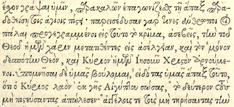 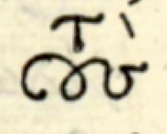{kind=link}
{kind=link}
τους (1)
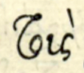{kind=link}
τους (2)
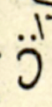{kind=link}
δε
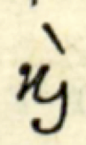{kind=link}
και
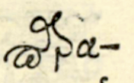{kind=link}
παρα
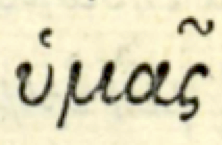{kind=link}
υμας
Consider a fragment of the Stephanus edition (1550) of the letter of Jude. More specifically, look at the separate fragments.
There are two very dissimilar glyphs that in transcription reduce to τους. At lowest level of description, will we consider these two big ligatures as the atomic entities, or do we decompose them into four letters? The decomposition is definitely a product of interpretation, it is not a product of direct perception.
Similar things hold for the δε and και ligatures, and here the constituent characters are even less recognizable, or even absent. In the παρα ligature the individual components are recognizable, they are arranged along a non-standard path.
There is also something going on with υμας. They look like two glyphs, υ (with diacritic) and μας (with diacritic). We see the circonflex on top of the ς, but we know that it belongs to the α. Now, if the μας is a single glyph, how do you express the fact that the circonflex belongs to the α part of it?
So, if we take the glyph as atomic object, and assign addresses to all glyph positions in a manuscript, then we need a method of subaddressing to address the inferred characters from which a ligature glyph has been composed.
This is not too difficult. In our first layer of description we mention the (big) glyphs and their positions, and in a second layer of description we could provide the list of composing characters per glyph. The position in that list will be the subaddress to individual characters.
Now in this case we are helped by the fact that this is not a manuscript at all. We have in fact pictures of the letterbox that Garamond used to typeset this edition. We can see there all those ligatures as separate entities.
But the bulk of the source materials are real manuscripts, where the boundary between character, glyph, ligature and connected writing are just plain fuzzy.
Juan Garcés, Jan Krans, Matthew Munson and I discussed these matters at length in Göttingen, at the Digital Humanities Centre.
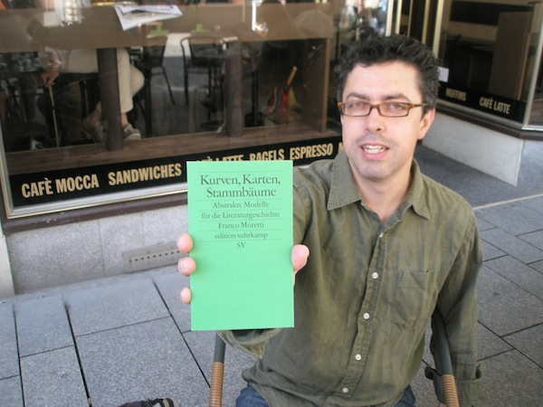{kind=link}
Juan
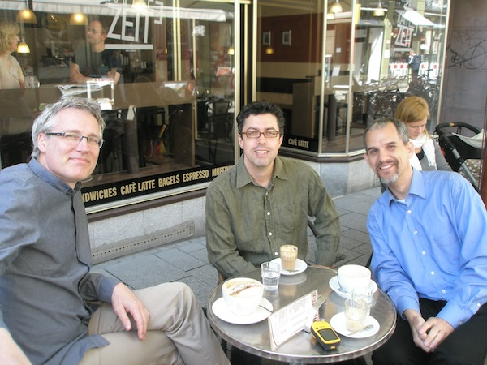{kind=link}
Jan, Juan, Matthew
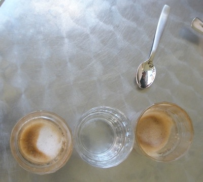{kind=link}
a complex glyph with acute accent
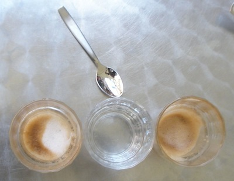{kind=link}
a complex glyph with grave accent